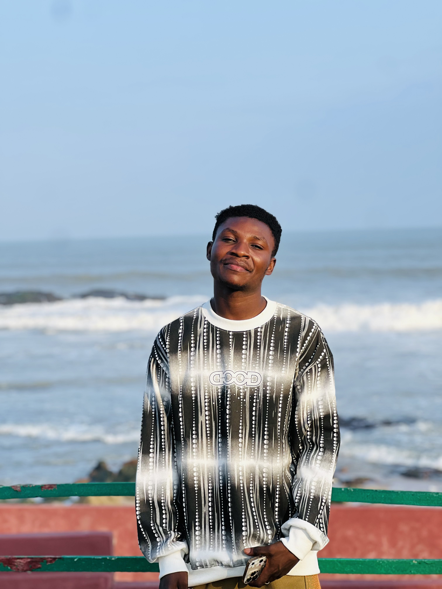

About
The story so far
Int'L DJ Experience blends the log-drum warmth of Amapiano, the celebratory energy of Afrobeats, the raw edge of Asakaa, and the soulful pulse of Afro-house into one continuous sound — built for warm nights and packed floors.
Based in Accra-Ghana, every set draws from the city's own street energy as much as the wider continent's sound, blending genres rather than staying inside one lane.